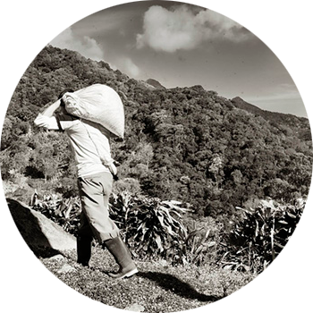
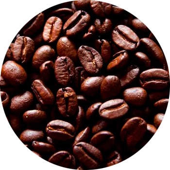
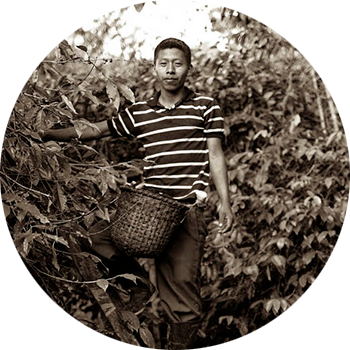
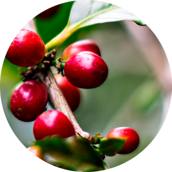
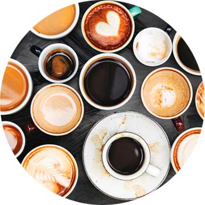

El café excepcional solo puede venir de granos excepcionales
Los granos arábico de Starbucks son diferentes de los granos arábicos regulares
¿Cómo lo hacemos? Nos alegra que lo pregunte
Vamos donde los mejores granos están: arriba
Los mejores granos crecen en las altitudes más elevadas. Las noches frías y los días templados crean granos más densos. Y los granos más densos tienen sabores más profundos y complejos. Pruébalos en cada taza de café de Starbucks.

Existimos por el bien de todo el café
Así que si podemos ayudar a un productor a hacer crecer mejores granos, lo haremos. A todo productor, en donde sea. Para ello, contamos con centros de apoyo para los productores en los cuatro continentes donde nuestros agrónomos prueban suelos, examinan muestras y prestan asesoramiento de forma gratuita a cualquier productor de café que lo solicite.

Cultivamos relaciones profundamente arraigadas
El futuro del café está entrelazado con el futuro de los productores de café. Así que nos nutrimos de esas relaciones de la misma manera que nutren sus granos. Trabajamos para ofrecer a los productores un precio justo y para asegurarnos que todos en la comunidad pueden beneficiarse de la industria del café. De esta forma, los productores obtienen mejores condiciones de vida y todos nosotros, una mejor taza de café.

Somos muy exigentes en la cosecha.
Nosotros sólo recogemos los frutos de café cuando están en su mejor momento. Rojos, maduros y perfectos. Después de eso, los ordenamos una y otra vez de acuerdo con el tamaño, el color y la densidad. ¿Cuál es la tolerancia en cuanto los defectos? Prácticamente cero. Algunas personas podrían llamarlo obsesivo. Nosotros lo llamamos un gran café.

Probamos, una y otra vez y otra vez.
Probamos más de 1.000 tazas de café al día para verificar el sabor superior que todos nosotros (incluido usted) hemos estado esperando. Un lote de café se degusta al menos tres veces antes de que sea aprobado, por lo que cada vez que toma un sorbo del café de Starbucks, es un sorbo que le encantará.
